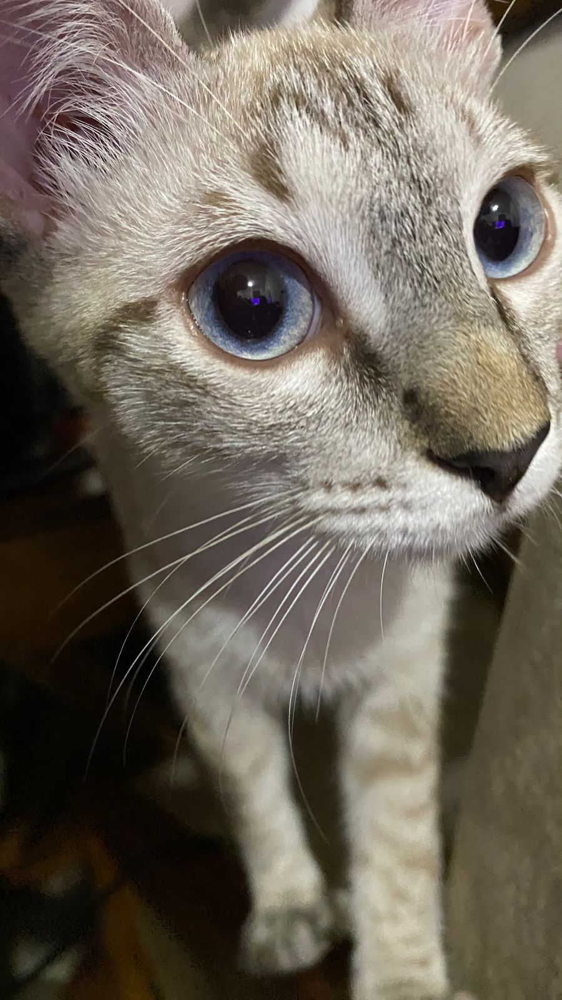
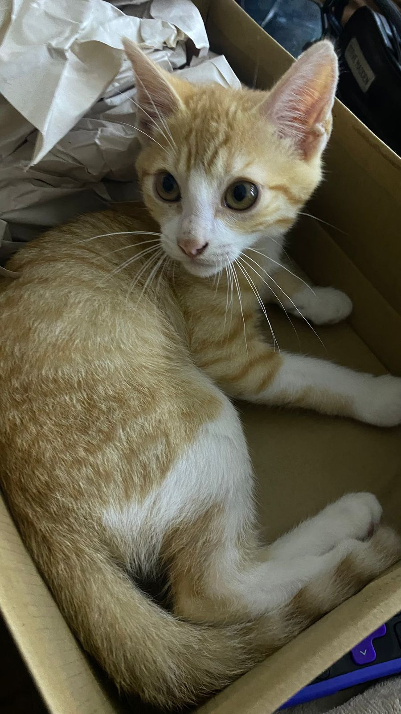
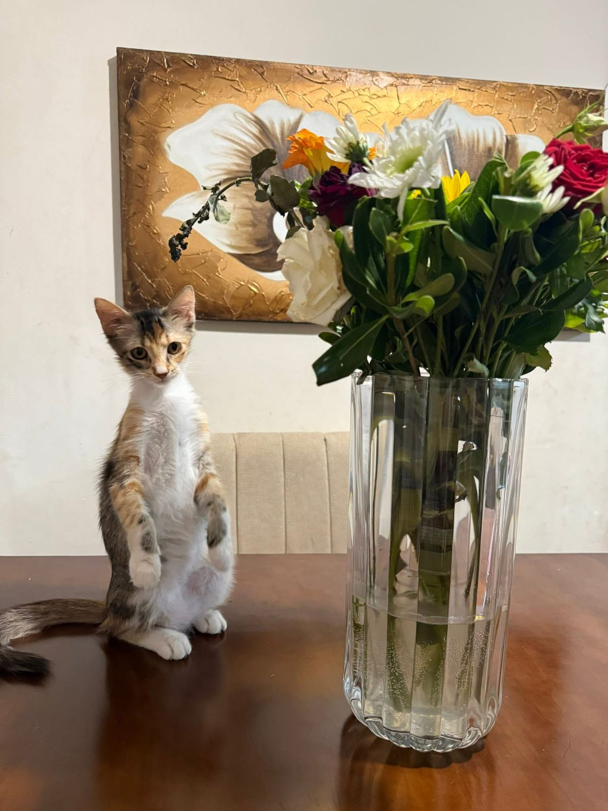

Mis mascotas siempre saben cómo robar cámara. Desde sus siestas más elegantes hasta sus caras graciosas, cada foto refleja sus personalidades curiosas y cariñosas.
En cada imagen hay un pedacito de su historia, un gesto o mirada que me recuerda lo feliz que me hacen tenerlos.
Estas son solo algunas de mis fotos favoritas, ¡pero hay muchas más guardadas en mi corazón!


